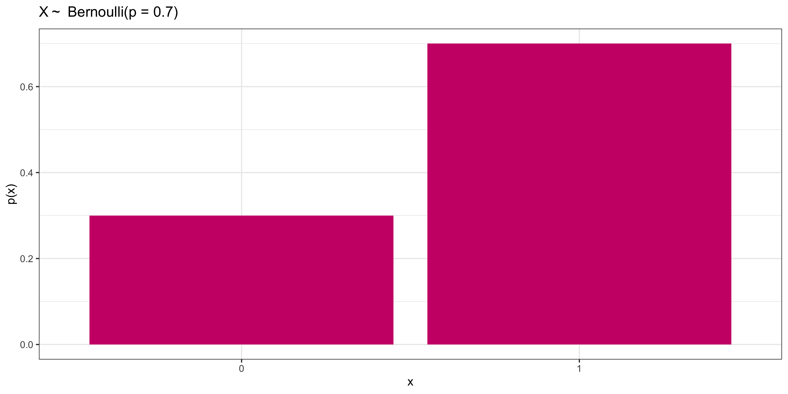
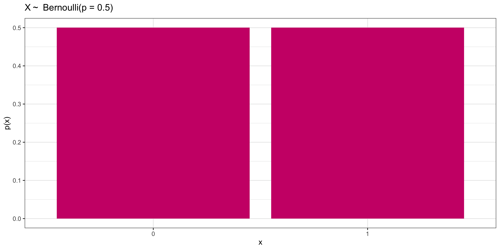

Random Variables II
Grayson White
Math 141
Week 10 | Fall 2025
Goals for Today
- Continue our discussion of expected value and variance
- Introduce the Bernoulli distribution
- Introduce the Binomial distribution
Review
Review: Expected Value, Variance, and Standard Deviation
The expected value (or mean) of a discrete random variable \(X\) is \[ \mu = E[X] = \sum_{i =1}^n x_i P(X = x_i) \] where \(x_1, \dots, x_n\) are all the values X could potentially take.
The variance and standard deviation of a discrete random variable \(X\) with mean \(E(X) = \mu\) is \[ \sigma^2 = \mathrm{Var}(X) = \sum_{i =1}^n (x_i-\mu)^2 P(X = x_i) \] \[ \sigma = \textrm{SD}(X) = \sqrt{\mathrm{Var}(X)} \]
Review: Rules for Expected Value and Variance
Theorem: Expectation of Sum
Let \(X\) and \(Y\) be random variables. Then \[ E(X + Y) = E(X) + E(Y) \]
Theorem: Scalar Multiplication with Expectation
Let \(X\) be a random variable, and let \(c\) be a number. Then \[ E(cX) = cE(X) \]
Theorem: Variance of Sum
Let \(X\) and \(Y\) be random variables. Additionally, let \(X\) and \(Y\) be independent. Then \[ \mathrm{Var}(X + Y) = \mathrm{Var}(X) + \mathrm{Var}(Y) \]
Theorem: Scalar Multiplication with Variance
Let \(X\) be a random variable, and let \(c\) be a number. Then \[ \mathrm{Var}(cX) = c^2\mathrm{Var}(X) \]
Recall: One Coin Flip
Consider a random variable \(X\) which is the number of heads in a single coin flip.
Q: What are the possible values for \(X\)? What are the probabilities each value of \(X\)?
- \(X = 1\) (H) with \(P(X=1) = \frac{1}{2}\)
- \(X = 0\) (T) with \(P(X=0) = \frac{1}{2}\)
Q: Compute the expected value and variance for \(X\) (the number of heads in a single coin flip)
\[ E[X] = (0)\frac{1}{2} + (1)\frac{1}{2} = \frac{1}{2} \]
\[ Var[X] = (0-1/2)^2\frac{1}{2} + (1-1/2)^2\frac{1}{2} = \frac{1}{4} \]
This distribution has a name!
- \(X\) is a Bernoulli random variable!
Specific Named Random Variables
Specific Named Random Variables
There is a vast array of random variables out there.
But there are a few particular ones that we will find useful.
- Because these ones are used often, they have been given names.
Will identify these named RVs using the following format:
\[ X \sim \mbox{Name(values of key parameters)} \]
Bernoulli Random Variables
\(X \sim\) Bernoulli \((p)\)
\[\begin{align*} X= \left\{ \begin{array}{ll} 1 & \mbox{success} \\ 0 & \mbox{failure} \\ \end{array} \right. \end{align*}\]Important parameter:
\[ \begin{align*} p & = \mbox{probability of success} \\ & = P(X = 1) \end{align*} \]
Distribution:
| \(x\) | 0 | 1 |
|---|---|---|
| \(p(x)\) | 1 - \(p\) | \(p\) |
Bernoulli Random Variables
\(X \sim\) Bernoulli \((p = 0.5)\)
\[\begin{align*} X= \left\{ \begin{array}{ll} 1 & \mbox{success} \\ 0 & \mbox{failure} \\ \end{array} \right. \end{align*}\]
Distribution:
| \(x\) | 0 | 1 |
|---|---|---|
| \(p(x)\) | 0.5 | 0.5 |
Bernoulli Random Variables
\(X \sim\) Bernoulli \((p)\)
\[\begin{align*} X= \left\{ \begin{array}{ll} 1 & \mbox{success} \\ 0 & \mbox{failure} \\ \end{array} \right. \end{align*}\]Distribution:
| \(x\) | 0 | 1 |
|---|---|---|
| \(p(x)\) | 1 - \(p\) | \(p\) |
Question: What’s the mean of a Bernoulli(\(p\)) random variable?
01:30
Bernoulli Random Variables
\(X \sim\) Bernoulli \((p)\)
\[\begin{align*} X= \left\{ \begin{array}{ll} 1 & \mbox{success} \\ 0 & \mbox{failure} \\ \end{array} \right. \end{align*}\]Distribution:
| \(x\) | 0 | 1 |
|---|---|---|
| \(p(x)\) | 1 - \(p\) | \(p\) |
Question: What’s the mean of a Bernoulli(\(p\)) random variable?
\[ \begin{align*} \mu &= \sum x p(x) \\ & = 1*p + 0*(1 - p) \\ & = p \end{align*} \]
Bernoulli Random Variables
\(X \sim\) Bernoulli \((p)\)
\[\begin{align*} X= \left\{ \begin{array}{ll} 1 & \mbox{success} \\ 0 & \mbox{failure} \\ \end{array} \right. \end{align*}\]Distribution:
| \(x\) | 0 | 1 |
|---|---|---|
| \(p(x)\) | 1 - \(p\) | \(p\) |
Question: What’s the standard deviation of a Bernoulli(\(p\)) random variable?
02:00
Bernoulli Random Variables
\(X \sim\) Bernoulli \((p)\)
\[\begin{align*} X= \left\{ \begin{array}{ll} 1 & \mbox{success} \\ 0 & \mbox{failure} \\ \end{array} \right. \end{align*}\]Distribution:
| \(x\) | 0 | 1 |
|---|---|---|
| \(p(x)\) | 1 - \(p\) | \(p\) |
Question: What’s the standard deviation of a Bernoulli(\(p\)) random variable?
\[ \begin{align*} \sigma & = \sqrt{ \sum (x - \mu)^2 p(x)} \\ & = \sqrt{(1 - p)^2*p + (0 - p)^2*(1 - p)} \\ & = \sqrt{p(1 - p)} \end{align*} \]
What about the sum of many Bernoulli random variables?
\(n\) “weighted coin tosses”: Expected Value and Variance
Let \(X\) be the number of successes in \(n\) independent Bernoulli(\(p\)) random variables.
Q: What are \(E(X)\) and \(\mathrm{Var}(X)\)?
Hint: We know, from the Bernoulli distribution, that if \(X_1\) is the number of heads in a single weighted coin flip with success probability \(p\), \[E(X_1)=p \quad \text{ and } \quad \text{Var}(X_1)= p (1 - p)\]
02:00
\(n\) “weighted coin tosses”: Expected Value and Variance
Let \(X\) be the number of heads in \(n\) independent Bernoulli(\(p\)) random variables.
Answer: Let \(X_1\) = Heads in 1st toss, \(\dots\) , \(X_n\) = Heads in \(n\)th toss: \[ X = X_1 + \dots + X_n = \sum_{i=1}^n X_i \]
\[ \begin{align} E(X) &= E \left( \sum_{i=1}^n X_i \right) = \sum_{i=1}^n E(X_i) = \sum_{i=1}^n p = np\\ \mathrm{Var}(X) &= \mathrm{Var}\left( \sum_{i=1}^n X_i \right) = \sum_{i=1}^n \mathrm{Var}(X_i) = \sum_{i=1}^n p(1-p) = np(1-p) \end{align} \]
What about the distribution of \(n\) weighted coin tosses?
We’ll start with the unweighted case, i.e., \(p = 0.5\)
\(n\) coin toss probabilities?
We’ve calculated Expectation and Variance for the number of heads in \(n\) coin tosses.
- But what about the probability that there are \(k\) heads in the \(n\) tosses?
For example, What’s the probability of \(k=2\) heads in \(n=3\) coin tosses?
- Let’s break down the problem: What are the possible outcomes?
\[ \begin{align} \text{TTT} & \implies X=0 \quad& \text{TTH or THT or HTT} & \implies X=1\\ \text{HHH} & \implies X=3 \quad& \text{THH or HTH or HHT} & \implies X=2\\ \end{align} \]
- The 3 coin flips had \(8\) possible outcomes, each with equal probability.
Differently, \(X\) had \(4\) possible outcomes: 0, 1, 2, or 3. Those probabilities are: \[ \begin{align} P(X=0) &= \frac{1}{8} \quad&\quad P(X=1) &= \frac{3}{8}\\ P(X=3) &= \frac{1}{8} \quad&\quad P(X=2) &= \frac{3}{8}\\ \end{align} \]
3 coin tosses probabilities
Notice that the probability of \(k\) heads in \(n\) coin flips is
\[P[X=k] = \big(\text{Number of ways to get k heads}\big) \times \big(\text{Prob of each way}\big)\]
For example, we found that in \(n=3\) coin tosses,
- 3 ways to get 2 heads
- Each sequence of 3 coin flips has probability \(\frac12\times\frac12\times\frac12=\frac18\)
- Thus, \(P(X=2) = \frac38\)
Generalization 1
First: What if \(n\) and \(k\) are bigger?
- In this case, it’s hard to count all the different combinations.
- Instead, we can rely on a handy formula: The number of ways to get \(k\) “successes” in \(n\) “trials” is \[{n\choose k} = \frac{n!}{k!(n-k)!}\] We read this as “n choose k”
The exclamation point is a factorial: \[ \begin{align} 0! &= 1\\ 1! &= 1\\ 2! &= 2\times 1=2\\ 3! &= 3\times2\times1=6\\ 4! &= 4\times3\times2\times1=24 \end{align} \]
Generalization 2
Second: What if the probability of “success” changes?
- In other words, how can we generalize to the sum of Bernoulli(\(p\)) case from the sum of the Bernoulli(\(p=0.5\)) case?
- In this case, the probability of getting a sequence of \(k\) “successes” in \(n\) trials is: \[p^k\times(1-p)^{n-k}\]
- There are \(k\) “successes”, each with probability \(p\): \(p^k\)
- There are \(n-k\) “failures”, each with probability \(1-p\): \((1-p)^{n-k}\)
Putting it all together
Thus, the probability of observing \(k\) successes in \(n\) independent Bernoulli trials with probability of success \(p\) is
\[P[X=k] = {n \choose k}p^k(1-p)^{n-k}\]
In this case, \(X \sim \text{Binomial}(n,~p)\). Or, in words: \(X\) follows a binomial distribution with \(n\) trials each with \(p\) probability of success
How to tell if your distribution is a Binomial?
- Number of trials, \(n\), must be fixed.
- Each trial must be Bernoulli, with success probability \(p\). (\(p\) must stay the same for each trial!)
- We must be counting the number of successes
Properties
Expectation and Variance of Binomial
If \(X \sim \text{Binomial}(n,~p)\), then:
\[ \begin{align} E(X) &= np \\ Var(X) &= np(1-p) \end{align} \]
Note that we derived this earlier before we knew what a Binomial was, just by using Theorems about sums of random variables!
Calculating Binomial Probabilities: dbinom()
If \(X\) is a binomial random variable with \(n\) trials and probability of success \(p\), we can use R to calculate the probabilities with the dbinom() function
- e.g., \(P(X = 2)\) where \(n=3\) and \(p=0.5\) (2 heads in 3 fair coin tosses)
Calculating Binomial Probabilities: pbinom()
We can also calculate \(P(X \leq k)\) with pbinom()
- e.g., \(P(X \leq 2)\) where \(n=3\) and \(p=0.5\) (2 or fewer heads in 3 fair coin tosses)
Can also calculate \(P(X > k)\) by doing 1 - pbinom():
- e.g., \(P(X > 2)\) where \(n=3\) and \(p=0.5\) (more than 2 heads in 3 fair coin tosses)
Activity: Survey of Portlanders
Suppose you believe 40% of Portlanders think the city should install more bike lanes. You will take a simple random survey of 50 Portlanders to test your belief.
Assume your belief is true. Let \(X\) be the number of survey respondents who think the city should install more bike lanes. Does \(X\) follow a Binomial distribution? If so, what are \(n\) and \(p\)?
Calculate the expected value and standard deviation of \(X\) (still assuming your belief is true)
Suppose you conducted the survey and found 30 respondents wanted more bike lanes. What’s the probability that \(X\geq 30\)? (use R!)
Draw the connection between the probability you calculated and a hypothesis test.
08:00